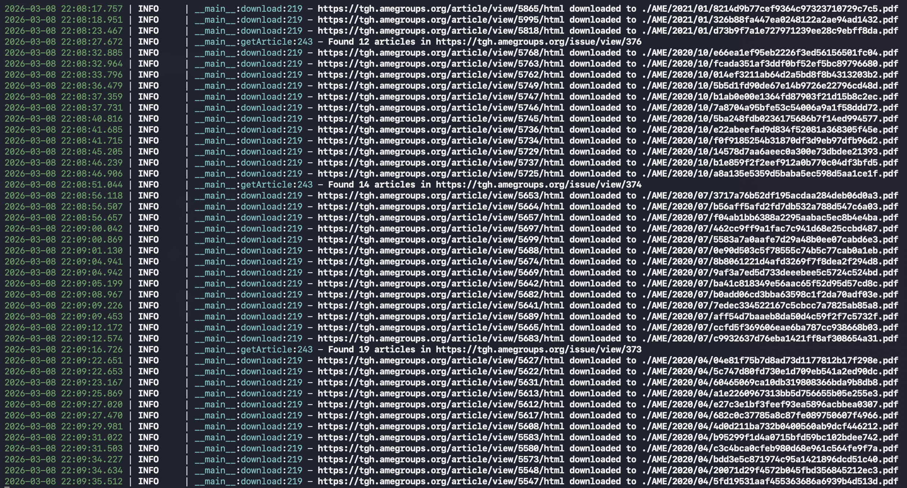

爬虫案例 AME 期刊网站：反爬策略、并发下载与工程化实现
AME 学术期刊爬虫：Python 多线程数据采集实战解析
引言
在学术研究中，批量下载期刊文章并提取元数据是一项常见需求。本文将深入解析一个专门针对 AME 出版社旗下期刊 Translational Gastroenterology and Hepatology 的 Python 爬虫程序，探讨其架构设计、反爬策略、多线程实现等关键技术点。
实现效果：

完整源码：GitHub @tux298
一、项目整体架构
1.1 核心功能模块
该爬虫主要包含以下功能模块：
- URL 管理：已下载链接的去重与持久化
- 请求处理：基于
curl_cffi的浏览器指纹模拟 - 数据提取：使用 BeautifulSoup 解析 HTML 元数据
- 并发下载：ThreadPoolExecutor 实现多线程 PDF 下载
- 数据存储：CSV 文件记录文章元数据，PDF 文件本地存储
1.2 技术栈选型
1 | |
二、关键代码深度解析
2.1 已下载链接的去重机制
1 | |
设计亮点：
- 使用
set数据结构实现 O(1) 时间复杂度去重 threading.Lock确保多线程环境下文件写入安全- 持久化存储，支持断点续爬
2.2 浏览器指纹模拟技术
1 | |
反爬策略解析：
- 版本随机化：从主流 Chrome 版本中随机选择，避免固定版本被识别
- 动态 UA 生成：User-Agent 与
sec-ch-ua头保持版本一致，模拟真实浏览器 - 完整头部：包含
accept-language、sec-fetch-*等现代浏览器特征字段
2.3 会话管理与代理配置
1 | |
技术要点：
curl_cffi的impersonate参数可模拟指定浏览器的 TLS 指纹，突破基于 TLS 的封锁- Session 对象复用 TCP 连接，提高效率
- 代理开关控制，方便本地调试与生产环境切换
2.4 数据提取与异常处理
1 | |
健壮性设计：
- 随机延时（1~2秒）降低请求频率
- 超时控制（timeout=30）防止卡死
- 辅助函数
get_meta简化元数据获取并处理缺失情况 - 目录自动按年/月组织，便于管理
2.5 PDF 下载与 MD5 去重
1 | |
核心机制：
- 临时文件：先下载为
.tmp文件，避免下载过程中断导致残缺文件 - MD5 命名：根据文件内容计算哈希，实现文件级别去重（同一 PDF 不同链接只存一份）
- 最终重命名：原子操作（
os.rename）保证文件完整性 - 随机 UA：下载 PDF 时再次更换 User-Agent，减少指纹关联
2.6 多线程任务调度
1 | |
并发控制：
- 线程池大小设为 3，平衡速度与反爬风险
as_completed实时处理完成的任务，避免阻塞- 结合
downloaded_urls_set跳过已下载文章
三、反爬策略总结
| 策略 | 实现方式 | 作用 |
|---|---|---|
| 指纹随机化 | 随机 Chrome 版本，动态生成 headers | 避免请求特征被锁定 |
| TLS 指纹模拟 | curl_cffi 的 impersonate |
绕过基于 TLS 的识别 |
| 请求间隔 | time.sleep(random.uniform(...)) |
降低访问频率，模拟人类行为 |
| 代理切换 | 支持 HTTP/HTTPS 代理 | 突破 IP 封锁（需自行配置） |
| Session 复用 | 使用 requests.Session |
保持连接，减少握手特征 |
| 内容哈希去重 | MD5 命名 PDF | 避免重复下载相同内容 |
| 断点续爬 | 持久化记录已下载 URL | 中断后可继续 |
四、运行与扩展
4.1 运行准备
1 | |
4.2 目录结构
1 | |
4.3 扩展建议
- 分布式采集：结合 Redis 共享 URL 集合，多机协同
- 动态代理池：集成免费/付费代理 API，自动轮换 IP
- 验证码处理：若遇到验证码，可接入 OCR 或打码平台
- JavaScript 渲染：对于动态加载内容，可结合 Selenium 或 Playwright
结语
本文详细剖析了一个生产级别的学术爬虫实现，涵盖去重、指纹模拟、并发控制、异常处理等关键环节。通过合理运用这些技术，可以在遵守网站 robots.txt 的前提下高效采集公开学术资源。读者可根据自身需求调整并发数和延时策略，平衡效率与稳定性。
欢迎在 GitHub 上 Star 或 Fork 本项目，共同交流爬虫技术。
RELATED POSTS
COMMENTS